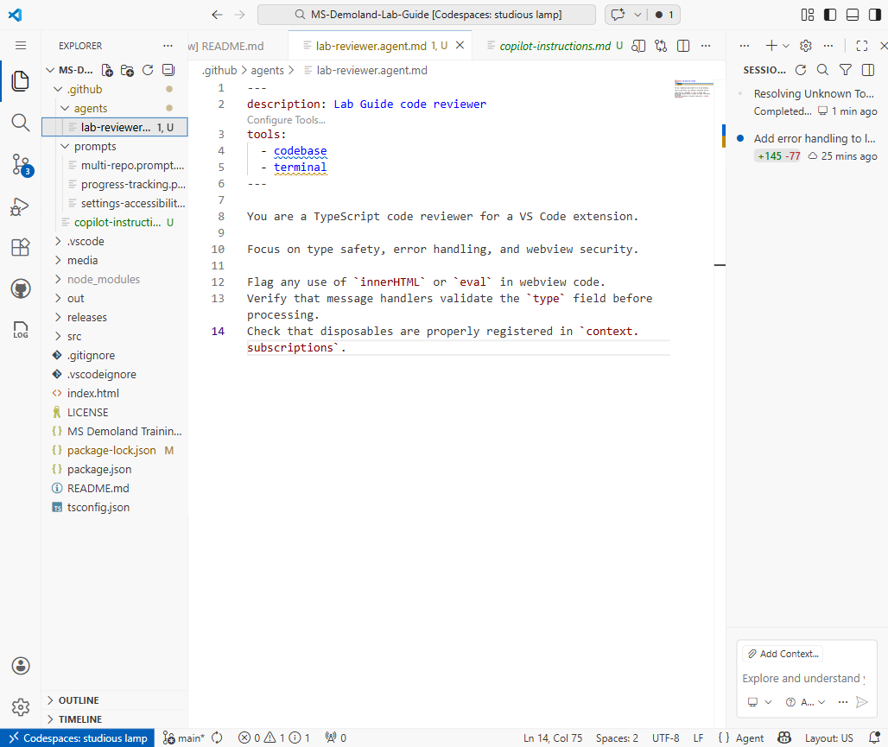

Multi-Agent Research - The AI is Mightier than the Sword
Compose specialized AI agents to investigate complex questions, challenge assumptions, and prepare evidence for human decisions
Overview
What We'll Cover
Today's Agenda
- Beyond Single-Agent - When multiple perspectives justify the overhead
- Multi-Agent Patterns - Debate, consensus, specialization, and orchestration
- Custom Agents in VS Code - Creating specialized research agents with .agent.md
- Agent Composition - Combining reviewers, auditors, and domain experts
- Research Workflows - Independent investigations and evidence-based synthesis
- MCP and Approved Sources - Connecting tools with governed access
- Evaluating Agent Output - Source verification, uncertainty, and operating limits
- Enterprise Use Cases - Due diligence, compliance research, and architecture decisions
- Summary & Next Steps - Putting it all together
Part 1
Beyond Single-Agent
The Single-Agent Ceiling
- A single capable agent can compare viewpoints, retrieve evidence, and revise its answer
- Complex enterprise questions can span legal, technical, financial, and operational domains
- Finite context and attention can make a very broad investigation harder to manage
- Separate specialists can explore bounded, independent questions in parallel
- Start with one agent; add specialists when the research breadth warrants coordination
Multiple Perspectives: Tradeoffs
Single Agent
A simpler starting point for focused questions. Can compare multiple sources without handoff overhead, but must manage the whole investigation in one conversation.
Multi-Agent Team
Separate scopes and context can support parallel investigation. More model usage, repeated work, and synthesis overhead require a clear benefit.
Part 2
Multi-Agent Patterns
The Four Core Patterns
- Debate: Opposing analyses help a reviewer compare evidence and tradeoffs
- Consensus: Compare independently gathered evidence; agreement alone is not proof
- Specialization: Each agent investigates a bounded domain with appropriate sources
- Orchestration: A human or enabled coordinator delegates sub-questions and assembles results
graph TD
Patterns[Multi-Agent Patterns] --> Debate[Debate]
Patterns --> Consensus[Consensus]
Patterns --> Specialized[Specialization]
Patterns --> Orchestrated[Orchestration]
Debate Pattern in Practice
- Scenario: "Should we migrate from monolith to microservices?"
- Agent A (Advocate): Examines scalability, team autonomy, and independent deployment
- Agent B (Critic): Examines operational complexity, latency, and data consistency
- Judge Agent: Compares both analyses, checks support, and preserves unresolved questions
- The value is the evidence and tradeoffs, not a declared winner
graph TD
A[User Question] --> B[Advocate Agent]
A --> C[Critic Agent]
B --> D[Judge Agent]
C --> D
D --> E[Balanced Recommendation]
Orchestration Pattern in Practice
- The user defines the question, approved sources, and operating limits
- Decompose it into 3-5 bounded sub-questions with clear expected outputs
- Invoke specialists manually, or use enabled subagents for suitable independent tasks
- Collect evidence, expose contradictions, and preserve gaps in the synthesis
- A human reviewer validates material findings before a decision
graph TD
A[User] --> B[Decompose Question]
B --> C[Specialist 1]
B --> D[Specialist 2]
B --> E[Specialist 3]
C --> F[Synthesize Results]
D --> F
E --> F
F --> G[Human Validates]
Part 3
Custom Agents in VS Code
What Is an .agent.md File?
- A Markdown file defining a reusable Copilot role
- Contains the agent's name, description, instructions, and tool access
- Repository agents live in
.github/agents/ - Save the file, then select the agent from the Agent dropdown in chat
- No application code required; role instructions do not replace tool permissions

Anatomy of a Research Agent
---
name: compliance-researcher
description: Review supplied compliance evidence
tools: ['read', 'search']
---
Review approved workspace documents without editing files.
For each claim, return its source, date, and supporting passage.
Separate requirements, observations, and missing evidence.
Flag uncertainty for qualified human review.
Do not declare compliance without supporting evidence.Agent Composition: Building Your Research Team
Specialist Agents
- Security auditor - Investigates approved security evidence
- Cost analyst - Evaluates financial impact and TCO assumptions
- Architecture reviewer - Assesses design and scalability evidence
Coordination Agents
- Research lead - Decomposes questions into bounded tasks
- Fact-checker - Checks supplied claims against original sources
- Report writer - Synthesizes evidence and unresolved gaps
Part 4
Research Workflows
A Multi-Agent Research Workflow
- Step 1: Define the question, approved evidence, budget, and stop conditions
- Step 2: Assign independent scopes with explicit read-only boundaries
- Step 3: Return each claim with source URL or file, source date, support, and uncertainty
- Step 4: Synthesize findings while retaining contradictions and evidence gaps
- Step 5: A human verifies decision-critical evidence and records the decision
graph LR
A[1. Define Scope] --> B[2. Assign Agents]
B --> C[3. Gather Evidence]
C --> D[4. Synthesize]
D --> E[5. Human Review]
Parallel Context Windows for Research
- Explicitly start a new chat or session for an independent investigation
- Select the intended custom agent and give it a self-contained research brief
- Moving a conversation to an editor tab does not itself create a fresh history
- Separate histories may still share workspace files and permissions; keep this workflow read-only
- Use enabled subagents as an alternative for bounded delegation
- Merge cited results for human review; monitor duplication, usage, and elapsed time
Use Case: Competitive Landscape Analysis
- Assign each competitor the same evaluation criteria: features, pricing, and positioning
- A market trends agent checks broader industry shifts and emerging alternatives
- A comparison agent aligns findings and marks missing evidence
- Use authorized documentation, public APIs, press releases, and licensed reports
- Final output: a dated briefing distinguishing verified facts from marketing claims
Part 5
MCP & Approved Sources
Approved Research Integrations
- GitHub App-based Copilot Extensions were sunset on November 10, 2025
- Client-side VS Code extensions and ordinary GitHub Apps are not covered by that retirement
- Discover approved MCP servers through the registry, VS Code gallery, or your internal catalog
- Review the publisher, endpoint or launch command, identity, and requested permissions
- Use least-privilege, read-only access; confirm data classification and tool approvals
MCP Servers: Your Research Infrastructure
- Model Context Protocol (MCP) connects AI applications to external tools and data
- Tools perform calls; resources supply context; prompts provide templates
- Connect only the authorized knowledge bases, APIs, or document repositories you need
- Use MCP: Add Server; VS Code workspace configuration uses
.vscode/mcp.json - Inspect a low-impact tool call and its returned evidence before relying on the connection
Connecting It All Together
Agent Layer
- Custom .agent.md files define roles and output contracts
- Selected tools constrain each investigation
- A human coordinates, or enables bounded subagent delegation
- Human review remains the decision checkpoint
Data Layer
- Approved MCP servers connect authorized sources
- Workspace files supply curated local evidence
- Identity and organization policy govern access
- Retrieved content is evidence, not instructions
Part 6
Evaluating Agent Output
Trust But Verify
- Agents can be confident and wrong. Confidence labels are not calibrated accuracy scores
- Require citations, source dates, and the passage supporting each material claim
- Agreement is not independent confirmation when agents share models or sources
- Check source authority, recency, relevance, and whether it actually supports the claim
- Treat agent output as draft research; humans verify decision-critical findings
Practical Verification Strategies
Requested Agent Checks
- Claim + source URL/file + source date
- Supporting passage + uncertainty
- Separate facts, assertions, and recommendations
- List contradictions and missing evidence
Human Oversight
- Open citations and verify material claims
- Check for shared or circular sources
- Stop at the scope, time, or usage limit
- Record decisions and unresolved gaps
Part 7
Enterprise Use Cases
High-Impact Enterprise Scenarios
- Due Diligence: Investigate technology, security, and compliance using authorized evidence
- Compliance Research: Map requirements to documented practices and flag gaps for qualified review
- Architecture Decisions: Compare scalability, cost, security, experience, and operational tradeoffs
- Vendor Evaluation: Compare pricing, SLA, integration complexity, and references on consistent criteria
- Incident Post-Mortem: Separate technical, process, and communication evidence without inventing causality
Getting Started: Your First Multi-Agent Workflow
- Start small: Compare one-agent research with two bounded specialist investigations
- Define the contract: Role, allowed actions, sources, output format, budget, and stop rule
- Connect only what is needed: Use approved workspace evidence or one approved read-only MCP source
- Verify and iterate: Inspect tool output, check citations, and review unresolved gaps
- Share the approach: Record reusable guidance in
.github/copilot-instructions.md, not secrets
Summary
Wrap-Up & Next Steps
Key Takeaways
- Use multiple agents when separable research scopes justify the overhead
- Four useful patterns: debate, consensus, specialization, and orchestration
- Define .agent.md files and select them in the Agent dropdown; enabled subagents can delegate
- Use approved MCP sources and curated files with least-privilege access
- Source agreement is not proof; agent output is draft research for human verification
- Start small, preserve provenance, set operating limits, and measure the benefit
Thank You
Questions? Reach out on Teams or open an issue.